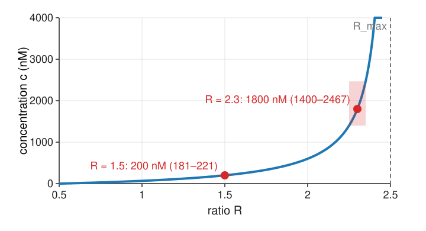
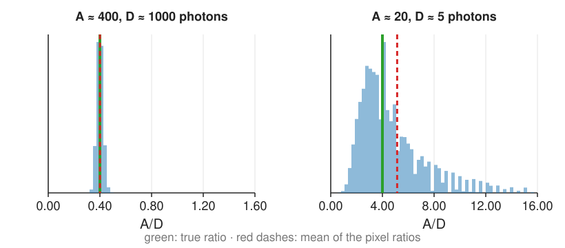

Ratio imaging, biosensors and the noise of a ratio
Image analysis
About this lecture
The most common FRET measurement is the simplest: the ratio of two channels of a biosensor that carries donor and acceptor on one chain. Dividing cancels a lot, but not everything, and a ratio of noisy counts has its own statistics.
Biosensors, and why a ratio cancels concentration, thickness and illumination.
Background before dividing, masks, and how to display a ratio.
Calibrating a ratio to a concentration, and why values near the top are unreliable.
Time-lapse pitfalls: bleaching, motion.
The noise of a ratio: which channel dominates, bias, heavy tails, ratio of sums against mean of ratios, binning first.
The day’s checklist of pitfalls.
Slides titled The math give the formulas and proofs; the ideas are complete without them.
Biosensors
One protein chain carries a donor, an acceptor and a sensing domain in between.
Binding a calcium ion, being phosphorylated, or feeling a force changes the chain’s shape: the distance (or orientation) between the dyes changes, and so does E.
More FRET: the donor dims, the acceptor brightens. The ratioR = I_A/I_D (acceptor over donor channel, both under donor excitation) goes up.
Donor and acceptor come 1:1 on one chain, so no three-image correction is needed to compare cells: the ratio reports E (plus a constant bleed-through floor). Two separate molecules need unit 2.
Single-dye ratio sensors (a dye whose spectrum shifts with pH or an ion: two excitation or emission bands) use exactly the same arithmetic.
Why a ratio
Either channel alone depends on how much sensor is in the pixel: concentration, cell thickness, illumination and focus. A thick region looks “active” just by being bright.
These all multiply both channels by the same factor k:
\frac{k\,I_A}{k\,I_D} = \frac{I_A}{I_D} .
The ratio keeps only what differs between the channels: the sensor’s state. The same reason ratios are used for gain-independent measurements (intensity features).
Background before dividing
An offsetb (camera offset, background light, autofluorescence) does not cancel:
The ratio is pulled towards 1, more in dim pixels. Subtract the background in both channels first (restated from intensity features).
Outside the cell both channels are background: after subtraction, a ratio of two noise values around 0. It explodes or turns negative. Mask first, with a threshold on the sum of the channels (thresholding).
Bleed-through of the donor into the acceptor channel adds d to every ratio: it shifts the lowest ratio R_\text{min} up but does not change the shape of the response. Calibration (below) absorbs it.
Displaying a ratio
A plain ratio map gives a dim, noisy pixel the same visual weight as a bright, reliable one.
Intensity-modulated display: colour (hue) from the ratio, lightness from the intensity. Dim pixels fade to black, the unreliable background disappears without a hard mask.
Use a colour map whose lightness changes monotonically (colour display) and show the colour bar with the ratio values; a log scale treats doubling and halving alike.
Try it: ratio images
Calibration: from ratio to concentration

A single binding site with dissociation constant K_d; the ratio goes from R_\text{min} (empty) to R_\text{max} (saturated):
c = K_d\,\frac{R - R_\text{min}}{R_\text{max} - R}
K_d = 200 nM, R_\text{min} = 0.5, R_\text{max} = 2.5: R = 1.5 → 200 nM; 2.3 → 1800 nM; 2.4 → 3800 nM. An error of ±0.05 in R is ±20 nM at 1.5 but 1400–2470 nM at 2.3. Near R_\text{max} the sensor is saturated: use one with a larger K_d. The dynamic range R_\text{max}/R_\text{min} (here 5) measures the sensor’s quality.
The math: the calibration curve
Fraction of sensors bound for a single site: \theta = c/(c + K_d). If the ratio is linear in \theta (equal brightness of both states in the denominator channel; the general form has an extra factor for it):
is 400 nM per unit R at R = 1.5, 10 000 at 2.3, 40 000 at 2.4: it diverges at R_\text{max}.
Time-lapse pitfalls
The two fluorophores bleach at different rates: the ratio drifts down (or up) over time without any biology. Correct with a no-stimulus control, or fit and remove the drift.
Channels taken one after the other while the cell moves: edge artefacts at the leading and trailing edge. Image both channels simultaneously, or align (FFT registration).
pH and temperature change the dyes’ brightness: calibrate under the same conditions.
Channel misregistration (chromatic shift): a one-pixel shift makes a bright and a dark rim at every edge.
The noise of a ratio

With photon counts (variance = mean, camera noise):
100 and 400 photons: \sqrt{0.01 + 0.0025} = 11\,\% per pixel. The dimmer channel dominates: make it brighter first.
Binning 4 × 4 (16 × the photons): 2.8 %.
Left: 400/1000 photons, a narrow, symmetric histogram. Right: 20/5 photons: skewed, with a long right tail, and the mean of the pixel ratios is 28 % too high.
The math: the delta method
Expand g(A, D) = A/D around the means \mu_A, \mu_D to second order:
Mean (second-order terms): \operatorname{E}[R] \approx \dfrac{\mu_A}{\mu_D}\Big(1 + \dfrac{\sigma_D^2}{\mu_D^2} - \dfrac{\operatorname{Cov}(A, D)}{\mu_A\mu_D}\Big): biased upwards by \mathrm{CV}_D^2 (1/\mu_D for photons).
Positive covariance reduces the ratio’s noise: a flicker of the lamp multiplies both channels, which is why ratioing removes it.
Summing m pixels multiplies the counts by m and divides \mathrm{CV}^2 by m.
Extreme case: the ratio of two independent zero-mean Gaussians is a Cauchy variable, with no mean and no variance: background pixels without a mask.
Ratios: bias, tails and the right average
Bias: \operatorname{E}[A/D] > \operatorname{E}[A]/\operatorname{E}[D], by about 1/N_D (10 % at N_D = 10 photons).
Heavy tails: when D can be near 0, single pixels give huge ratios.
Log ratio: a doubling and a halving are equally far from 1, and \log R is closer to Gaussian: plot log ratios.
For a region, divide the sums (ratio of sums), do not average the pixel ratios: the mean of ratios gives dim pixels the same weight as bright ones and inherits their bias. (The same choice as the slope through the origin against the mean of ratios in the crosstalk exercise.)
Bin or smooth both channels with the same linear filter before dividing (allowed, denoise); do not median-filter the ratio image afterwards without saying so.
The same propagation explains unit 2 (F_c is a difference: variances add) and unit 3 (E = 1 - P/Q).
Try it: the noise of a ratio
The day’s checklist
What a reviewer of a FRET image analysis will ask:
Background subtracted in every channel; no saturated pixels.
Bleed-through and cross-excitation coefficients from controls taken with the same settings.
Controls: donor only, acceptor only, no-FRET, a positive construct; acceptor-only for photoconversion.
Channels aligned; bleaching checked and corrected.
Expression level comparable (bystander FRET).
ApparentE (fE) reported as such; \kappa^2 discussed before any distance.
Ratios as ratio of sums over regions; masks for the background; noise estimated.
Summary
A single-chain biosensor reports its state as the ratio R = I_A/I_D, which cancels concentration, thickness and illumination.
Subtract the background in both channels before dividing; mask the background; show ratios with an intensity-modulated display.